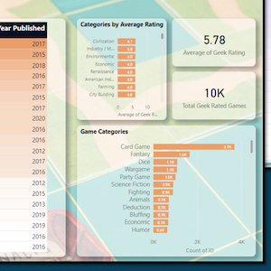

Master's Program Projects
Good or Bad Borrower? Predicting Loan Default
Final deliverable for spring 2021 course: Machine Learning Models in Python. Used data from LendingClub website to predict whether borrowers would pay back their loans. Evaluated which characteristics of borrowers most influenced default.

Predicting Board Game Ratings
I adore board games! I completed this project with 3 other students in spring 2021 as part of a course called Machine Learning Models in Python.

Forecasting Customer Demand
Delivered predictive models and interactive Power BI dashboard to a local food production company as part of a professional lab for my master's degree program.
View Project